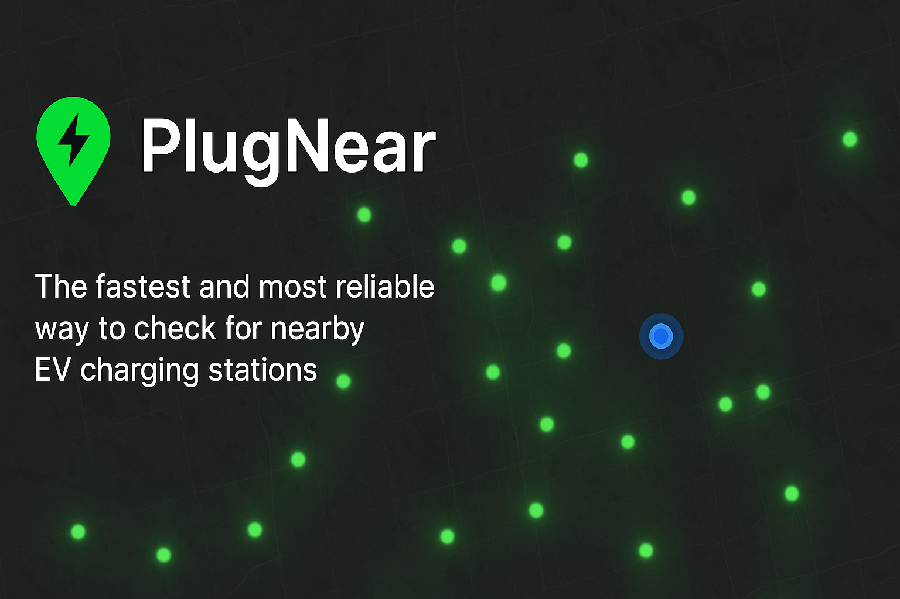
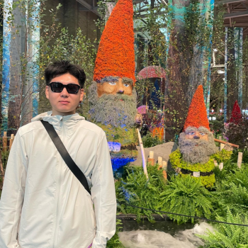
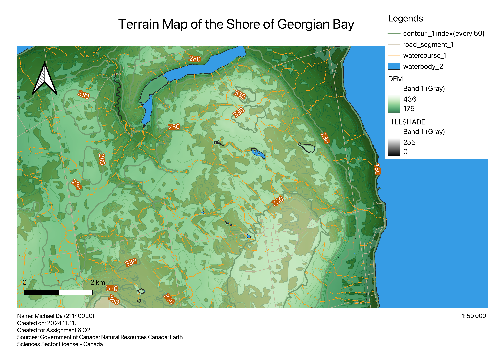
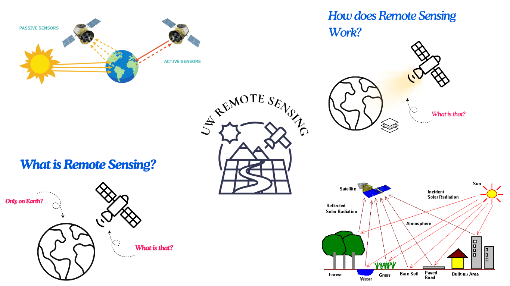

Hi, I'm Michael — a student at the University of Waterloo pursuing a degree in Geomatics. I have a deep passion for computer science and mathematics, which drive my interest in the dynamic fields of remote sensing and AI.
Through my studies, I explore how geospatial data and cutting-edge technologies intersect to solve real-world challenges. I'm particularly fascinated by how AI enhances data analysis in satellite imaging, autonomous vehicles, and environmental monitoring.
View Resume


Michael Da — mda@uwaterloo.ca
Connect with me